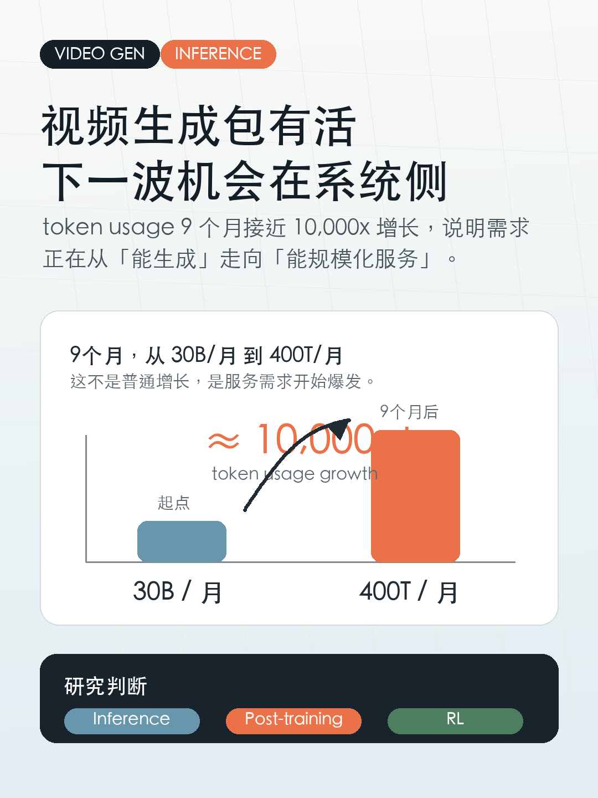
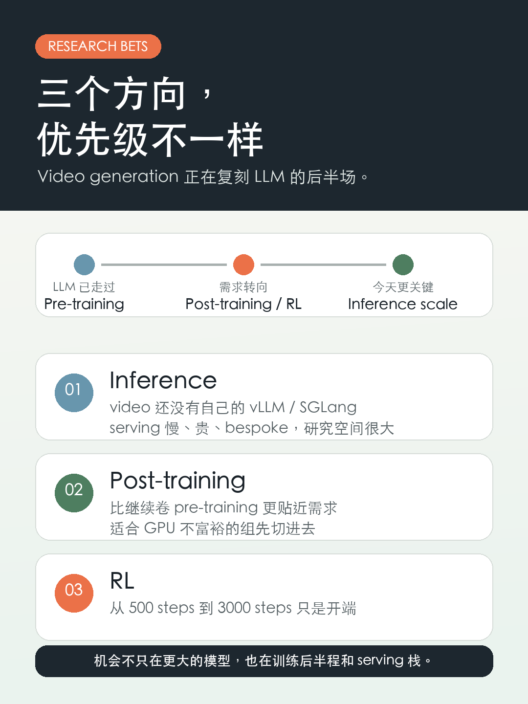

视频生成包有活

看到 Together AI 的数字，最容易漏掉的一点是：
✅ token usage 接近 10,000x 的增长，只用了 9 个月。
从 30B tokens/月到 400T tokens/月。
前两天有人问我：video generation researcher 现在应该做什么？
我的答案很简单：inference、post-training、RL。

原因是：LLM 是 video generation 的前置预演。
LLM 的需求已经从 pre-training 转向 post-training/RL，再到今天越来越关键的 inference。Video generation 还落在后面，所以机会反而更清楚。
1️⃣ Inference：video 还没有自己的 vLLM/SGLang
LLM 这边已经有 SGLang、vLLM 这样的系统栈，但 video generation 还没有接近的东西。
现在的视频模型 serving 仍然很 bespoke、慢、贵。这里不是纯工程优化，而是很大的研究空间。
2️⃣ RL：video 里还远没跑通
Video generation 里的 RL 还很早。
现有 literature 里最长的 RL training 大概接近 500 steps；我们最近的 work 可以把这个推进到 3000 steps。
这是进展，但离 LLM 里的 RL 成熟度还很远。
3️⃣ 系统 infra 也明显落后
RL training system、inference serving infra，以及 RL 训练里用来生成 rollouts 的 serving stack，都比 LLM 落后一大截。
所以如果你不是 GPU 很富裕的组，我会觉得：
✅ inference
✅ post-training
是非常合理的 research bets。
RL 也值得做，但更吃系统、数据和算力，短期门槛更高。
标签：视频生成、AIGC、AI系统、科研方向、研究生科研、LLM